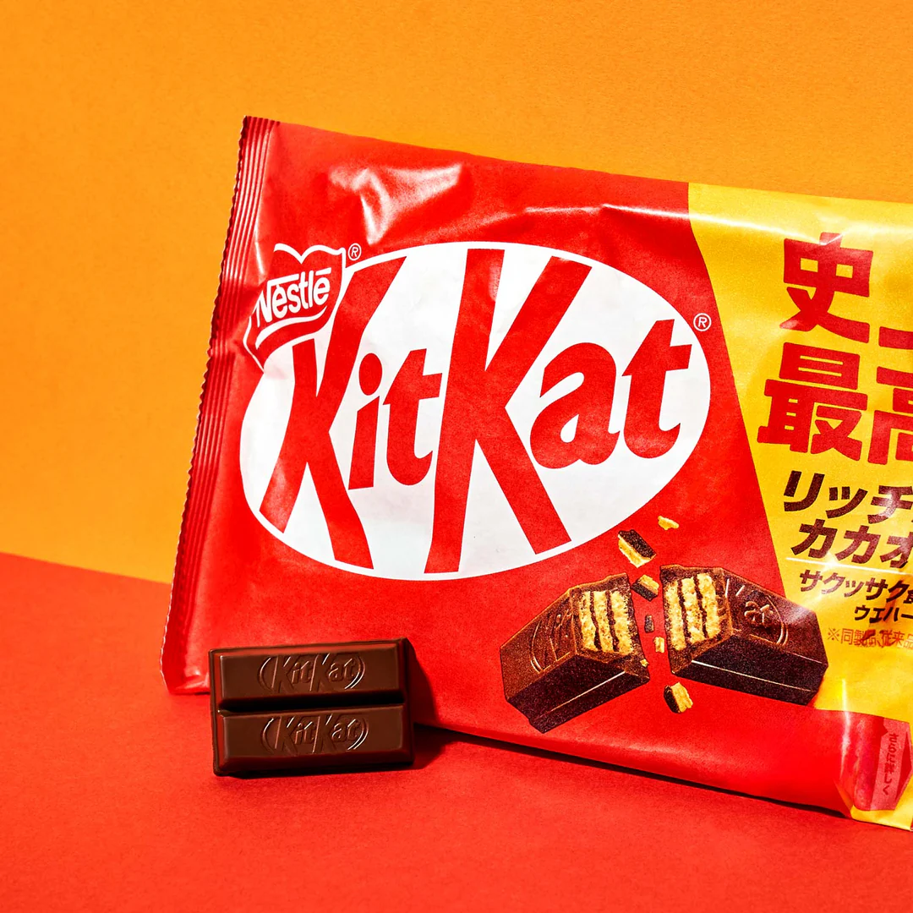
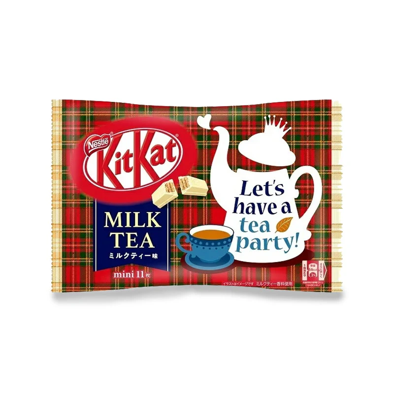

Head to Overall
Original Flavor
The classic Kit Kat, less sweet, more chocolatey.
Chocolate Orange

The classic Kit Kat, combination of chocolate and orange - aromatic yet indulgent.
Milk Tea
Strong milk tea flavor featuring real black tea leaves.
Whole Wheat Biscuit

A unique and surprisingly delicious flavor with wafers made from whole wheat flour and toasted grains.